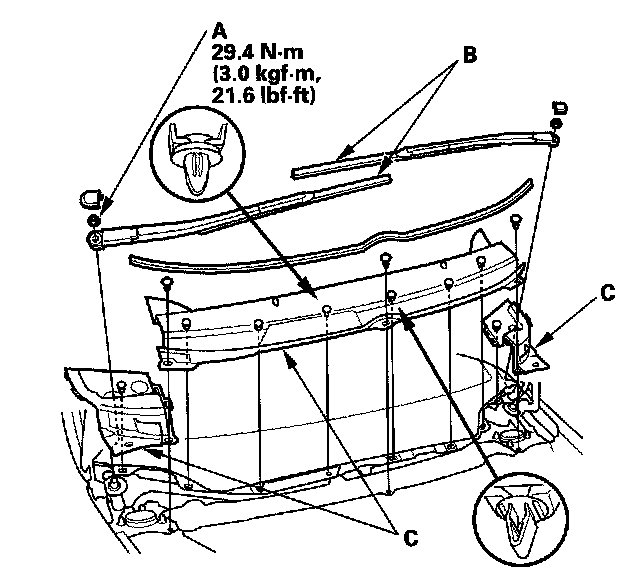
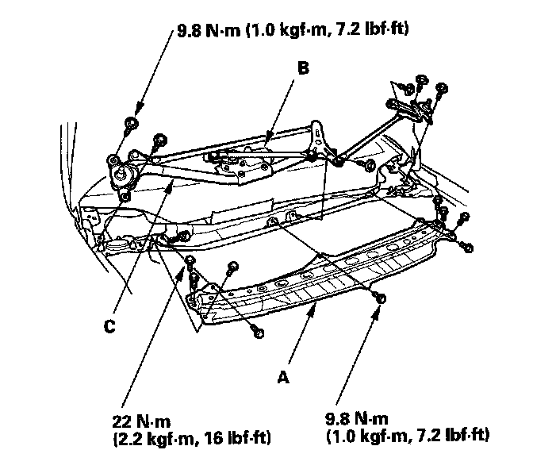
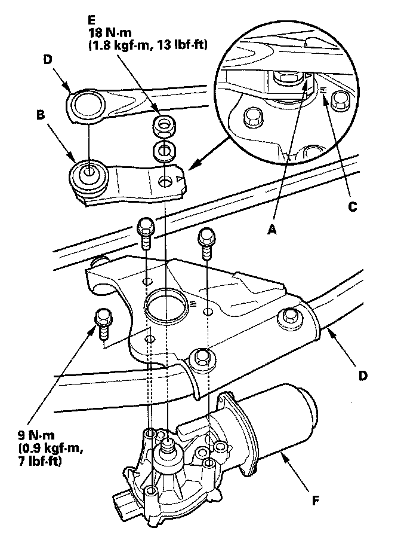

4-Door
Wiper Motor Replacement4-door

1. Open the hood. Remove the caps, nuts (A), and the windshield wiper arms (B).
2. Remove the cowl covers (C).

3. Remove the bolts and the under-cowl panel (A).
4. Disconnect the 5P connector from the wiper motor (B), then remove the six bolts and wiper linkage assembly (C).

5. Make sure the mark (A) on the link (B) is aligned with the mark (C) on the windshield wiper linkage (D).
6. Remove the nut (E), and separate the link and windshield wiper linkage.
7. Remove the three bolts, and separate the windshield wiper linkage from the wiper motor (F).
8. Install in the reverse order of removal, and note these items:
- Align the marks of the link and the linkage to install the linkage with the original adjustment.
- Apply multipurpose grease to the moving parts.
- Before installing the wiper arms, turn the wiper switch ON, then OFF to return the wiper shafts to the park position.
- If necessary, replace any damaged clips.
9. After installation, adjust the wiper arms.